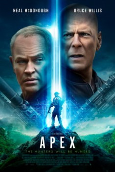

Apex (2021)


Being this close to death makes you feel alive.

País:Estados Unidos, 93 minutos.
Idiomas:Inglés
GénerosCiencia Ficción
Director/es:Edward Drake
Guionistas:Corey Large, Edward Drake
Códec de vídeo:Unknown
Número: 1049
TomatoMeter:

--

--
Clasificación IMDb:


3.0/10 (6.6K votos)
Certificación:
Argumento:
Cinco cazadores de élite pagan para cazar a un hombre en una isla desierta, solo para convertirse en presa.
Reparto
Neal McDonough (Como Rainsford), Bruce Willis (Como Malone), Corey Large (Como Carrion), Alexia Fast (Como West), Lochlyn Munro (Como Lyle)
Medio: Archivo de video,
Localización: D:\PELICULAS\ACTORES\Bruce Willis\Apex (2021) 1080p DUAL\Apex (2021) 1080p DUAL.mp4
Prestado: No
Rel. aspecto: Unknown